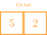

10 Representations
February 24, 2021
Review Question
Which of the below blocks of code will create the image to the right? The window measures 500 x 200 pixels.

d = 150
x, y = 250 - d / 2, 100 - d / 2
a1 = GArc(x, y, d, d, 90, -180)
gw.add(a1)d = 150
x, y = 250 - d, 100 - d
a1 = GArc(x, y, d, d, -180, 90)
gw.add(a1)d = 150
x, y = 250 - d / 2, 100 - d / 2
a1 = GArc(x, y, d, d, 90, 180)
gw.add(a1)d = 150
x, y = 250 - d / 2, 100 - d / 2
a1 = GArc(x, y, d, 180, -90)
gw.add(a1)An old code, but it checks out
- Binary notation is an old idea
- Described by German mathematician Leibniz back in 1703
- Leibniz describes his use of binary notation in an easy to follow style
- Leibniz’s paper notes that the Chinese had discovered binary arithmetic 2000 years earlier, as illustrated by the patterns of lines in the I Ching!

Other Bases
- Binary is not a particularly compact representation to write out, so computer scientists will often use more compact representations as well
- Octal (base 8) uses the digits 0 to 7
- Hexadecimal (base 16) uses the digits 0 to 9 and then the letters A through F


- Why octal or hexadecimal over our trusty old decimal system?
- Both are powers of 2, so it makes it easy to convert back to decimal
Base(ic) Practice
- The Java compiler has a fun quirk where every binary file is produces begins with

- What is this in decimal? octal? hexadecimal?